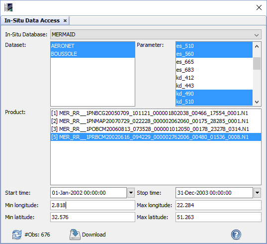
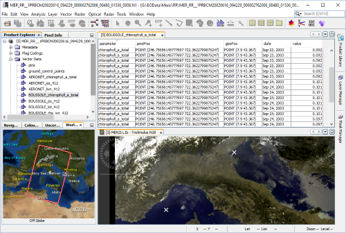

| In-Situ Client (Demonstrator) |
|
The In-Situ Client is currently an demonstrator application and not yet really useful for productive applications. Further updates will bring access to more in-situ server and also better ways for requesting the data. To help us to make progress in the right direction you can tell us your suggestions in the .
Currently the In-Situ Client gives only limited access to the hosted by . Two datasets are available , namely BOUSSOLE and AERONET-OC.
| Dataset | Latitude | Longitude | Start Date | End Date |
|---|---|---|---|---|
| AERONET-OC | 43.367 | 7.9 | 19/04/2002 | 18/07/2002 |
| BOUSSOLE | 45.314 | 12.508 | 23/09/2003 | 01/10/2003 |
The user interface of the In-Situ Client allows
After downloading in-situ observations they are stored in the vector data nodes in each selected product if the geo-location of the observation is contained in the product.

In-Situ Database: Select the In-Situ Database the client shall connect to.
Dataset: After connected to the In-Situ Database the user can select one or multiple of the offered datasets. No selection means all datasets.
Parameter: After connected to the In-Situ Database the user can select one or multiple of the offered parameter. The list depends also on the selected datasets as different datasets offer differend parameters. No selection means all parameter.
Product: The user can select one or multiple of the currently opened data products. The selected products will span the temporal and the spatial extent for the in-situ data search.
Start time: Specifies the start time of the temporal extent.
End time: Specifies the end time of the temporal extent.
Min longitude: Specifies the minimum longitude value of the spatial extent.
Max longitude: Specifies the maximum longitude value of the spatial extent.
Min latitude: Specifies the minimum latitude value of the spatial extent.
Max latitude: Specifies the maximum latitude value of the spatial extent.
 Clicking on this button will display the number of in-situ observations which will be retrieved by the current query settings.
Clicking on this button will display the number of in-situ observations which will be retrieved by the current query settings.
 Clicking on this button the download of the in-situ observations is initiated. Before the actual download is performed you have to
accept the data policies of the datasets.
Clicking on this button the download of the in-situ observations is initiated. Before the actual download is performed you have to
accept the data policies of the datasets.
 Clicking on this button will open this help page.
Clicking on this button will open this help page.
Before downloading the data a window is displayed in which you have to accept the data policy for each dataset which requires it. You can also save all data policies to one file for later use when you want to acknowledge and cite the dataset. If you don't accept the data policies or cancel the dialog the in-situ observations are not downloaded.

The downloaded in-situ observations are stored in vector data nodes. For each parameter of each dataset one vector data node is created. The following screen shot gives an overview how a product equiped with in-situ observations looks like.
